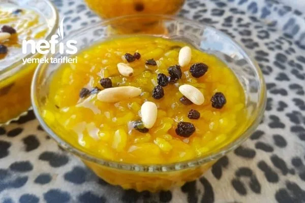

Zerde Tatlısı
içindekiler
(4-6 kişilik)
1 çay bardağı pirinç
5 su bardağı su
2 su bardağı toz şeker
1 tatlı kaşığı zerdeçal veya 1 tutam safran
1 yemek kaşığı mısır nişastası
1 çay bardağı su (nişastayı açmak için)
1 yemek kaşığı kuş üzümü
1 yemek kaşığı çam fıstığı
1 tatlı kaşığı gül suyu (isteğe bağlı)
Pepeçura Tatlısı
içindekiler
(4-6 kişilik)
1 kg siyah kokulu üzüm (tercihen kara üzüm)
1 su bardağı toz şeker (üzümün tatlılığına göre azaltılabilir)
1/2 su bardağı mısır unu
1 su bardağı su (üzümün suyu yetersiz gelirse)

Kerebiç Tatlısı
içindekiler
(6-8 kişilik)
Hamur İçin:
100 gram tereyağı
1 su bardağı irmik
Yarım paket kabartma tozu
2 adet yumurta
2 yemek kaşığı pudra şekeri
2/3 çay bardağı sıvı yağ
Aldığı kadar un
İç Harcı İçin:
1 su bardağı dövülmüş ceviz veya Antep fıstığı
1 çay kaşığı tarçın
2 yemek kaşığı şeker
Köpük İçin:
100 gram çöven otu
4 su bardağı su
1 su bardağı pudra şekeri
Alternatif olarak, çöven otu bulamazsanız krem şanti kullanabilirsiniz
Lor Tatlısı
içindekiler
(4-6 kişilik)
250 gram tuzsuz lor peyniri
1 adet yumurta
1 çay bardağı irmik
1 çay bardağı toz şeker
1 paket kabartma tozu
1 paket vanilin (isteğe bağlı)
2-3 yemek kaşığı un (kıvama göre artırılabilir)
Arzuya göre: limon kabuğu rendesi veya tarçın
Şerbet İçin:
2 su bardağı toz şeker
2 su bardağı su
Birkaç damla limon suyu